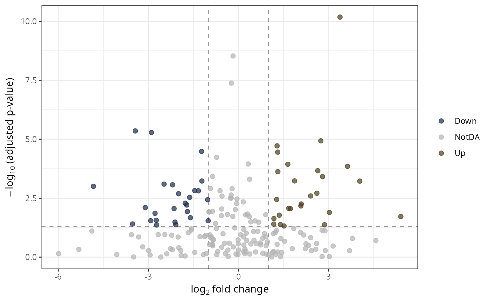
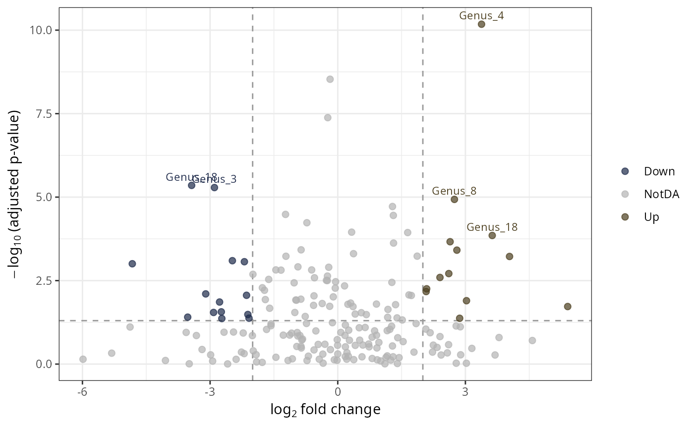

Build a volcano plot (log2 fold change on the x-axis against
\(-\log_{10}(\text{adjusted p-value})\) on the y-axis) from the result
table of a differential abundance analysis, e.g. DESeq2
(DESeq2::results()), ANCOMBC (ancombc_pq()) or ALDEx2
(aldex_pq()). Each taxon is colored according to its status: up, down or
not differentially abundant (NotDA).
The function auto-detects the input type and sets fc and padj
accordingly (see Details). Pass explicit values to override.
Usage
plot_volcano_pq(
df,
fc = NULL,
padj = NULL,
alpha = 0.05,
lfc_threshold = 1,
label_col = NULL,
label_n = 10,
point_size = 2,
point_alpha = 0.7,
palette = c(Down = "#1d2949", NotDA = "grey70", Up = "#4B3E1E")
)Arguments
- df
(required) A
data.frame(or any object coercible withas.data.frame(), such as aDESeqResultsobject) or the raw list returned byancombc_pq().- fc
(character or NULL, default
NULL) Name of the (log2) fold change column. WhenNULLthe column is inferred from the input type (see Details).- padj
(character or NULL, default
NULL) Name of the adjusted p-value column. WhenNULLthe column is inferred from the input type.- alpha
(numeric, default 0.05) Adjusted p-value threshold for significance (horizontal dashed line).
- lfc_threshold
(numeric, default 1) Absolute (log2) fold-change threshold for biological relevance (vertical dashed lines). Set to 0 to classify on significance only.
- label_col
(character, default NULL) Optional column used to label the significant points (e.g. a taxonomic rank). If NULL, no labels are drawn.
- label_n
(integer, default 10) Maximum number of significant points to label, ranked by \(-\log_{10}(\text{padj})\). Ignored when
label_colis NULL.- point_size
(numeric, default 2) Size of the points.
- point_alpha
(numeric, default 0.7) Opacity of the points.
- palette
(named character vector) Colours for the three statuses. Must be named
Down,NotDAandUp.
Value
A ggplot object.
Details
Auto-detection rules (applied when fc or padj is NULL):
If
dfis a list with a$resslot containinglfc_*andq_*columns (output ofancombc_pq()):$resis extracted automatically, and the firstlfc_*/q_*column (excluding the intercept) is used. Passfc/padjexplicitly to pick a specific comparison when multiple groups are present.If columns
log2FoldChangeandpadjare present (e.g. afteras.data.frame(DESeq2::results(dds))): DESeq2 defaults are used.If columns
effectandwi.eBHare present (output ofaldex_pq()): ALDEx2 defaults are used.
Manual column mappings (for other tools or custom results):
DESeq2 (
DESeq2::results()):fc = "log2FoldChange",padj = "padj".ANCOMBC (
ancombc_pq()$res):fc = "lfc_<group>",padj = "q_<group>".ALDEx2 (
aldex_pq()):fc = "effect",padj = "wi.eBH"(or"we.eBH").
Taxa with padj == 0 are drawn at the top of the plot (their
\(-\log_{10}\) value is capped just above the largest finite value); taxa
with a missing padj are classified as NotDA.
Examples
# \donttest{
# Synthetic differential abundance table (DESeq2-like columns)
set.seed(42)
res <- data.frame(
log2FoldChange = rnorm(200, sd = 2),
padj = runif(200)^3,
Genus = sample(paste0("Genus_", 1:20), 200, replace = TRUE)
)
plot_volcano_pq(res)

plot_volcano_pq(res, lfc_threshold = 2, label_col = "Genus", label_n = 5)

# }
if (FALSE) { # \dontrun{
# From a real DESeq2 analysis (auto-detected)
data("GlobalPatterns", package = "phyloseq")
GP <- subset_taxa(GlobalPatterns, GlobalPatterns@tax_table[, 1] == "Archaea")
GP <- subset_samples(GP, SampleType %in% c("Soil", "Skin"))
if (requireNamespace("DESeq2")) {
dds <- DESeq2::DESeq(phyloseq_to_deseq2(GP, ~SampleType))
plot_volcano_pq(DESeq2::results(dds))
}
# From ANCOMBC (auto-detected: $res extracted, lfc_/q_ columns picked)
if (requireNamespace("ANCOMBC")) {
res_ancombc <- ancombc_pq(data_fungi_mini, fact = "Height", levels_fact = c("Low", "High"))
plot_volcano_pq(res_ancombc)
}
# From ALDEx2 (auto-detected)
if (requireNamespace("ALDEx2")) {
res_aldex <- aldex_pq(data_fungi_mini, bifactor = "Height",
modalities = c("Low", "High"))
plot_volcano_pq(res_aldex)
}
} # }